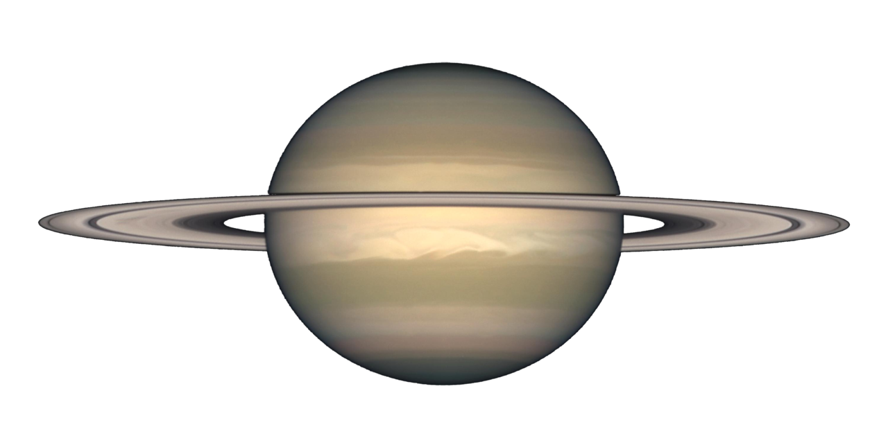
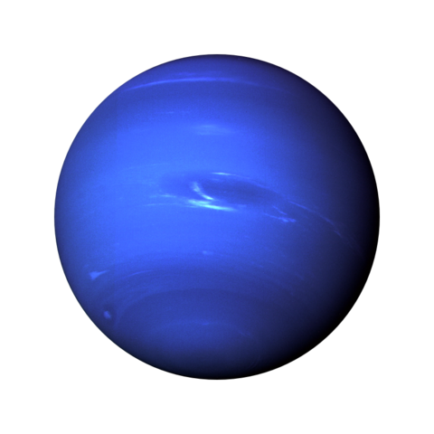

Gázóriások
Az óriásbolygók (gázbolygók, gázóriások, Jupiter-típusú bolygók) a Nap és más csillagok körül keringő égitestek egyik típusa. Összetételük (nagy illóanyag tartalmuk) és felépítésük alapján a bolygórendszerünk külső részén található négy bolygót (Jupiter, Szaturnusz, Uránusz, Neptunusz) soroljuk ebbe a csoportba. Emiatt a külső bolygó elnevezés is illik rájuk, mivel naptávolságuk nagyobb mint 5 CsE. Következésképp, e bolygók keringési ideje nagy, pálya menti sebességük kicsi. A más csillagok körül felfedezett exobolygókra is alkalmazzák a megnevezést, azonban ha a csillagot kísérő égitest tömege nagyobb 13 Jupiter-tömegnél, akkor barna törpéről beszélünk. Az óriásbolygók a Naprendszer keletkezése idején a Naptól távolabb jöhettek létre, ott, ahol már a víz is kifagyott, és a jégszemcsék is részt vehettek a bolygótestek felépítésében. Továbbá, miután összeállt egy néhányszor tíz földtömegnyi magjuk, gravitációsan is magukhoz tudták kötni a környezetükben lévő gázt. Ezért tartalmaznak lényegesen több illó anyagot, mint a kőzetbolygók. Átlagos sűrűségük kicsi, 0,69-1,64 g/cm³ közötti. Tömegük a Föld tömegének 14-318-szorosa, átmérőjük 49 000-143 000 km között van. A Jupiter és a Szaturnusz esetében a mintegy 10 földtömegnyi mag felett atomos, majd molekuláris hidrogénköpeny helyezkedik el, amely határfelület nélkül megy át a légkörbe. Az Uránusz és a Neptunusz belsejében egy-egy vastag ionizált vízköpeny lehet. Mind a négy óriásbolygónak gyűrűje és holdrendszere, valamint erős, belső eredetű mágneses tere van, és rádiósugárzást bocsátanak ki.
Jupiter

A Jupiter az ötödik bolygó a Naptól, és messze a legnagyobb a Naprendszerben. Óriásbolygó, tömege két és félszerese az összes többi bolygó együttes tömegének. A többi óriásbolygóval (Szaturnusz, Uránusz, Neptunusz) együtt gyakran Jupiter-típusú, vagy külső bolygóknak nevezik. A Földről nézve maximális fényessége -2,5 magnitúdó, ezzel átlagosan a harmadik legfényesebb égitest az éjszakai égbolton, a Hold és a Vénusz után (rövid időre a Mars vetekedhet fényességével pályájának bizonyos pontjain). A Jupiter főként hidrogénből áll, tömegének egynegyedét hélium teszi ki, sziklás magja nehezebb elemeket tartalmazhat. Gyors forgása miatt alakja forgási ellipszoid (lapított gömb). A külső atmoszférája láthatóan számos sávra oszlik a különböző szélességi körökön, turbulenciát és viharokat okozva ezek határain. Kiemelkedő látványosság a Nagy Vörös Folt, egy óriási vihar, amit már a 17. században is megfigyeltek. A bolygót halvány planetáris gyűrűrendszer és erős magnetoszféra vesz körül. 79 holdja van (2018-as adat), köztük a négy legnagyobbat Galilei-holdaknak nevezzük, amelyeket 1610-ben fedezett fel névadójuk. A Jupitert számos űrszonda vizsgálta már, legismertebbek ezek közül a Pioneer és Voyager közelrepülések, később a Galileo és a Juno űrszonda. A bolygót már az ókori csillagászok is ismerték, számos kultúrában mitologikus és vallási tartalommal ruházták fel. Nevét Iuppiterről, a római főistenről kapta. A bolygó csillagászatban és asztrológiában használt jele az istenség kezében hagyományosan megjelenő villámot jelképezi A Jupiter felső légköre atomszám szerint 93% hidrogénből és 7% héliumból áll, molekulaszám szerint 86% hidrogénből és 13% héliumból. Mivel a héliumatom négyszer nagyobb tömegű, mint a hidrogénatom, az összetétel változik, ha a tömegarányt nézzük. Ez alapján a légkör 75%-a hidrogén, 24%-a hélium, 1%-a más elem. A bolygó belseje sűrűbb anyagot tartalmaz, nagyjából 71% hidrogént, 24% héliumot és 5%-a más elemeket. A légkör nyomokban tartalmaz metánt, vizet, ammóniát és szilícium alapú összetevőket. Található még szén, etán, hidrogén-szulfid, neon, oxigén és kén. A légkör külső rétege tartalmaz fagyott ammóniakristályt is. Infravörös és ultraibolya mérésekkel benzolt és más szénhidrogént is kimutattak. Színképelemzés alapján a Szaturnuszról úgy tudjuk, hogy összetétele hasonló a Jupiteréhez. A másik két gázóriásnak, az Uránusznak és a Neptunusznak viszonylag kevesebb hidrogénje és héliuma van. Helyszíni mérések hiánya miatt a nehezebb elemek pontos gyakorisága a Jupiteren túli bolygóknál nem ismert.
Szaturnusz
A Szaturnusz a hatodik bolygó a Naptól számítva, a második legnagyobb a Naprendszerben a Jupiter után. Egyike annak az öt bolygónak, ami a Földről szabad szemmel is látható. A Szaturnusznak látványos, jégből és törmelékekből álló gyűrűrendszere van. Szaturnuszról, a római istenről nevezték el. Jele az isten sarlójának stilizált képe (Unicode: ♄). A Szaturnusz belső magja valószínűleg vas-nikkel összetételű, a magot fémes hidrogén veszi körül, ezután egy közbülső réteg következik, amit folyékony hidrogén és folyékony hélium alkot, és végül a bolygó külső takarója gázokból áll. A Szaturnusz légkörének halvány-sárgás színezete van, ezt a benne található ammóniakristályok okozzák. A fémes hidrogénrétegben elektromos áramok folynak, ez kelti a bolygó körüli mágneses mezőt, ami gyengébb, mint a Föld esetében, de mágneses momentuma 580-szor erősebb, a Szaturnusz nagyobb mérete miatt. A Szaturnusz mágneses mezőjének térerőssége egy huszada a Jupiterének. A külső légkör általában nélkülözi a kontrasztokat, de hosszabb ideig is fennmaradó alakzatok időnként megjelenhetnek rajta. A szélsebesség elérheti az 1800 km/h-t (ez több, mint a Jupiter esetében, de nem olyan nagy értékű, mint a Neptunuszon). A Szaturnusz legismertebb jellegzetessége a gyűrűrendszere, amit nagyrészt jégkristály, kisebb mértékben sziklatörmelék és kozmikus por alkot. Legalább 82 holdja ismert, ezek közül 53 van hivatalosan elnevezve. A Titán, a Szaturnusz legnagyobb holdja (a második legnagyobb hold a Naprendszerben) nagyobb, mint a Merkúr bolygó, bár tömege kisebb. Ez az egyetlen olyan hold a Naprendszerben, aminek jelentős légköre van. A gyűrűket először Galileo Galilei figyelte meg távcsövével 1610-ben, de nem tudta azonosítani őket. Azt írta, "a bolygó nincs egyedül, hanem három részből áll, amelyek majdnem érintik egymást és soha nem mozdulnak el egymáshoz képest". 1612-ben a gyűrűk síkja közvetlenül a Föld felé irányult és a gyűrűk látszólag eltűntek, majd 1613-ban újra megjelentek. 1655-ben Christiaan Huygens volt az első, aki felvetette, hogy a Szaturnuszt egy gyűrű veszi körbe. Egy, a Galiliénál fejlettebb távcsövet használva Huygens megfigyelte a Szaturnuszt, és azt írta: "a Szaturnuszt egy vékony, széles gyűrű veszi körbe, amely sehol nem érinti". 1675-ben Giovanni Domenico Cassini megállapította, hogy a Szaturnusz gyűrűjét valójában több kisebb gyűrű és a köztük lévő rések alkotják; a legnagyobb ilyen rést később Cassini-résnek nevezték el. 1859-ben James Clerk Maxwell bebizonyította, hogy a gyűrűk nem lehetnek egy tömbből, és felvetette, hogy apró részecskéből állnak, melyek egymástól függetlenül keringenek a bolygó körül. Maxwell elméletét 1895-ben bizonyították be a gyűrűkről végzett spektroszkópos megfigyelésekkel, amelyeket James Keeler végzett a Lick Obszervatóriumban.
Uránusz

Az Uránusz a Naprendszer hetedik bolygója. Óriásbolygó, a harmadik legnagyobb átmérőjű és a negyedik legnagyobb tömegű. Az Uránusz felfedezését 1781. március 13-ától számítjuk, mert ekkor pillantotta meg először Sir William Herschel. Azóta tudjuk, hogy a bolygót előzőleg 1690 és 1771 között legalább hússzor regisztrálták, de mindannyiszor csillagnak vélték. Az elmozdulását pedig mérési hibának. Herschel eleinte nem volt tisztában vele, hogy a Naprendszer egy eddig ismeretlen bolygóját fedezte fel, először üstökösként azonosította az égitestet. Nem tartott sokáig, mire a csillagászok felismerték e felfedezés jelentőségét. Sir William eredetileg támogatójáról, III. György angol uralkodóról nevezte el a bolygót, a Georgium Sidus (György csillaga) név azonban nem talált lelkes fogadtatásra a világ többi részén. Lalande azt javasolta, hogy a felfedezőről nevezzék el, végül Johann Elert Bode német csillagász elképzelése kerekedett felül, az Uránusz (Οὐρανός latinosított neve), ami így jobban illeszkedett a többi bolygó ógörög-latin elnevezéseinek sorába). Uránosz az atyja Kronosznak, aki Szaturnusz görög megfelelője, az ég ura. Herschel hat évvel később felfedezte az Uránusz két legnagyobb holdját: a Titániát (III) és az Oberont (IV). Az Arielt (I) és az Umbrielt (II) 1851-ben Lassell találja meg. A Mirandát (V) csak 1948-ban fedezi fel Gerard Kuiper. Az Uránusz légköre nagyrészt hidrogénből (83%) és héliumból (15%) áll. Kevés metánt (2%) is tartalmaz, amely az atmoszféra felső részén elnyeli a vörös fényt, ami miatt a bolygó halvány kékeszöld színű. A felhők ugyanúgy mozognak a szélességek mentén, mint a Jupiter és a Szaturnusz esetében, csak sokkal halványabbak. A felhőket hidrogén-szulfid alkotja. Az Uránusz tengelyferdesége 90°-hoz nagyon közeli, ezért a keringési idő egy jelentős részében az egyik pólus van a Nap irányában. A pólusok több energiát kapnak a Naptól, ennek ellenére a bolygó az egyenlítő közelében a legnagyobb hőmérsékletű, ismeretlen okokból. A nagy tengelyferdeség egy korai bolygóméretű objektummal való ütközés során jöhetett létre több milliárd évvel ezelőtt. Az Uránusznak gyenge és aszimmetrikus mágneses tere van. A mágneses tér erőssége a déli félteke felszínén mindössze 0,1 gauss (10 µT), ugyanakkor az északi félgömbön eléri az 1,1 gauss (110 µT) értéket. Az átlagos térerősség a felszínen 0,23 gauss (23 µT). A Jupiternél és Szaturnusznál feltételezhető fémes hidrogénből álló övezet az ehhez szükséges elegendő tömeg hiányában az Uránusznál nem tudott kialakulni. Az erős mágneses tér hiányát a Voyager-2 űrszonda igazolta, amely meglepetést keltett, és a bolygó belső szerkezetére így másféle magyarázatot kellett keresni. Az Uránusz mágneses tengelye 60°-kal eltér a forgási tengelytől, ezért a napszél lökéshullám frontja erősen eltolja, mintegy a bolygó mögé csavarja és spirálba rendezi a mágneses erővonalakat. A magban nagy nyomású, átalakult kristályszerkezetű sós-ionos víz áramlik, amely gyenge mágneses erőteret kelt.
Neptunusz
A Neptunusz a Naptól számítva a nyolcadik, legkülső bolygó a Naprendszerben. Csillagrendszerünk négy óriásbolygója közül a méretét tekintve az utolsó, a tömegét nézve viszont az Uránuszt megelőzve a harmadik legnagyobb. Színe miatt Neptunusról, a tengerek római istenéről nevezték el. Jele az isten háromágú szigonyát jelképezi (Unicode: ♆). 14 ismert holdja van, ezek közül a két ismertebb a Nereida és a Triton. Az első ember, aki egyértelmű utalást tett egy Uránuszon túli bolygó létezésére, egy amatőr csillagász, Hussey tiszteletes, kenti rektor volt. 1834-ben írt erről G. B. Airy cambridge-i professzornak, aki 1835-től királyi csillagász lett. Airy azonban szkeptikus volt, és ebbe Hussey is belenyugodott. John Couch Adams tehetséges angol matematikus 1841-ben határozta el, hogy az Uránusz pályaháborgásait felhasználva kiszámítja egy lehetséges új bolygó koordinátáit. 1845-ben számításai eredményeit elküldte Airy királyi csillagásznak, de megfigyelés nem történt. A francia Urbain Le Verrier hasonló számításokat végzett. Adams és Le Verrier számításai egy fokon belül megegyeztek. De Le Verrier se járt jobban a francia csillagászokkal, ezért írt Johann Gallénak a berlini obszervatóriumba. Így a Neptunuszt az Uránusz mozgásából levezetett perturbációk alapján Galle fedezte fel 1846-ban. Galileo Galilei már 1613 januárjában észlelte a bolygót, amikor az a Jupiterhez igen közel látszott, és sikerült két egymást követő éjszakán is megfigyelnie. Jegyzeteiből kitűnik, hogy január 28-án észrevette a Neptunusz elmozdulását egy háttércsillaghoz képest, és január 6-án is utólag bejelölt egy pontot a Neptunusz akkori pozíciójában, azaz korábbi jegyzeteiben valószínűleg átnézte a környezetre vonatkozó korábbi észleléseit. Nem ismert viszont olyan bejelentése, amelyben kortársait értesítette volna a felfedezéséről. Galilei Neptunusz megfigyelései 1980-óta ismeretesek, amikor is Charles Thomas Kowal és S. Drake kutatásaik közben fedezték fel őket. Az óriásbolygó típusú bolygók közé tartozik, szerkezetét tekintve az Uránuszhoz hasonlít. Tömege 1,0243 *1026 kg, amivel átmenetet képez a Föld-típusú bolygók és a nagyobb gázóriások között: a tömege a Földének 17-szerese, a Jupiterének pedig 1/19-ed része. Felszíni gravitációja a Jupiter kivételével minden más naprendszerbeli bolygónál nagyobb, noha az csak 20%-kal nagyobb a földinél. Egyenlítői sugara 24 764 km, ami majdnem négyszerese a Földének.